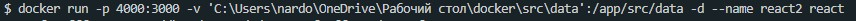

Volumes - это некоторая папка в которую можно настроить доступ из контейнера
Здесь важно отметить, что снимок файлов в папке volume будет неизменяем, т.е. то состояние которое было на момент запуска контейнера, оно будет постоянно. Состояние можно менять внутри docker. Но изменения не melen отображаться если мы запустим docker b затем отредактируем файл вне докера.
Допустим мы создали react приложение, которое имеет в папке src директорию веф внутри которой лежить JSON файл с набором данных. Мы можем монтировать в эту папку внутри контейнера, папку которая у нас находится локально на компьютере, вне проекта. Что бы указать такую папку наша команда запуска будет выглядеть вот так:
-v - флаг создания volume
'C:\Users\nardo\OneDrive\Рабочий стол\docker\src\data' - откуда монтируем (папка на локальном компе)
/app/src/data - куда монтируем. здесь отметим что директория /app была задана в Dockerfile как WORKDIR